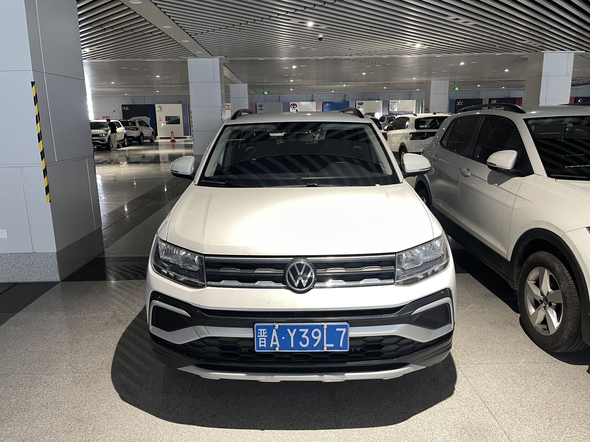

Used Car Export from China
Volkswagen T-Cross 2024
Export-ready Volkswagen T-Cross 2024 from China. Engine: 1.5L Naturally Aspirated Engine. Mileage: 15,489 鈥?68,716 km. Contact Zhonggu Auto Export for FOB pr.

Used Car Export from China
Export-ready Volkswagen T-Cross 2024 from China. Engine: 1.5L Naturally Aspirated Engine. Mileage: 15,489 鈥?68,716 km. Contact Zhonggu Auto Export for FOB pr.

Volkswagen T-Cross 2024 1.5L Automatic used vehicle in China. Production date: 2024-04. Dimensions: 4218 1760 1599 mm. Wheelbase: 2651 mm. Engine: 1.5L Naturally Aspirated Engine, Max Horsepower 110 Ps, Max Power 81 kW, Max Torque 141 Nm.
This vehicle page is prepared for overseas dealers who need clear vehicle information, mileage, engine details and FOB inquiry support before arranging export from China.
Zhonggu Auto Export can coordinate vehicle condition checks, export document preparation, customs declaration communication and shipping coordination according to the buyer's destination market.
Yes. Use the inquiry form or WhatsApp button and include your destination country and quantity.
Yes. We support document coordination and export preparation for qualified orders.
Get FOB Price
Ask for the latest FOB price, condition details and export schedule for this vehicle.
Thank you, your inquiry has been received. Our sales team will contact you soon.